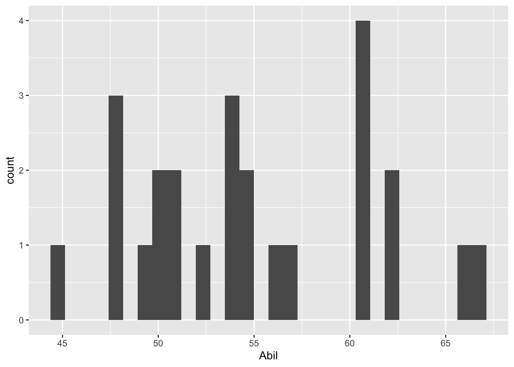

8 Correlations
So far in this book we have been building your skills and knowledge on data wrangling and you now have the basis for a lot of the work you will do in research. You may think that the tasks we ask you to do will get harder as this course progresses but that isn’t true. The hardest part of working with data is at the very beginning, trying to learn the new terminology, figuring out how to load in data and wrangle it into the format you need. And whilst it may feel like you have not yet covered a lot, it is really worth reflecting on just how far you’ve come in a short time.
For instance, you can now:
- Understand what functions, arguments, objects, variables, and tibbles are.
- Read data into your working environment for analysis.
- Tidy data into an appropriate format.
- Calculate a range of descriptive statistics.
- And Create plots of data.
That’s amazing! And to be honest, as you will see, that actually covers a large percentage of what we will do. What we do now is start moving on to actually running some inferential statistics, where we make inferences about our population of interest from the sample we have collected. Specifically, in this chapter we are going to move on to performing a correlation and to create a plot to visualise the data. Correlation is a test that measures the relationship between two variable. In other words, you measure two variables and the correlation analysis tells you whether or not they are related in some manner, either positive relationship or negative relationship, and how strong that relationship is - when you discuss a correlation you should always talk about the strength and the direction of the relationship. The figure below shows three examples of correlations just to give an idea:
Note: When dealing with correlations you should always refer to relationships and not predictions. In a correlation, X does not predict Y, nor does X cause an effect in Y. We will look at different tests in this book where you can take about cause-and-effect and about prediction, but correlation all we can say is whether X and Y are related.
Now, as we said above, to actually carry out a correlation is fairly straightforward and we will show you that today in a little while. The hardest part of correlations is really wrangling the data and interpreting what the results mean. You are going to run a few correlations in this chapter to give you good practice at running and interpreting the relationships between two variables.
In this chapter we will use the examples in Miller and Haden (2013), Chapter 11, looking at the relationship between four variables: reading ability, intelligence (IQ), the number of minutes per week spent reading at home (Home); and the number of minutes per week spent watching TV at home (TV). We will use this data across a series of tasks to help you understand correlations more. You do not need to read the chapter but hopefully from just the names of the variables you can see in this situation that it would be unethical to manipulate these variables so measuring them as they exist in the environment is most appropriate; hence the use of correlations. And for clarity, this is an example of observational research; all correlations are observational, but not all observational research uses correlations.
Finally, there are two main types of correlations that people tend to think of (though there are more):
- Pearson’s product-moment correlation (often shortened to the Pearsona standardised measure of the linear relationship between two variables correlation) and symbolised by r
- Spearman’s rank correlation coefficient (often shortened to the Spearmana standardised measure of the relationship between two variables that does not assume a linear relationship. Note that the relationship can be linear but it is not required. correlation) and symbolised by rho or sometimes \(r_s\) or sometimes \(\rho\)
We will talk a little bit about these two correlations in the work we do today. And we shall begin now!
8.1 Set-up the Data
As always, the first activity is about getting ourselves ready to analyse the data so try out the steps and if you need help, consult the earlier chapters.
8.1.0.1 Activity 1: Set-up
- Open RStudio and set the working directory to your chapter folder. Ensure the environment is clear.
- If you’re using the Rserver, avoid a number of issues by restarting the session - click
Session-Restart R
- If you’re using the Rserver, avoid a number of issues by restarting the session - click
- Open a new R Markdown document and save it in your working directory. Call the file “Correlations”.
- Download MillerHadenData.csv and save it in your folder. Make sure that you do not change the file name at all.
- If you prefer you can download the data in a zip folder by clicking here
- Remember not to change the file names at all and that
data.csvis not the same asdata (1).csv.
- Delete the default R Markdown welcome text and insert a new code chunk that loads the following packages, in this specific order, using the
library()function. Remember the solutions if needed.- Load the packages in this order,
car,correlation,report,psych, andtidyverse - we have not used four of these packages before so you will likely need to install them using
install.packages(). Remember though that you should only do this on your own machine and only in the console window. If you are using the RServer you will not need to install them.
- Load the packages in this order,
- Finally, load the data into an object named
mhusingread_csv().
- Each package requires using the
library()function each time. For example,library(car),libary(correlation), etc, etc. - mh <- read_csv(“What_is_your_datafile_called.csv”)
8.1.0.2 Activity 2: Look at your data
Excellent! If you have loaded in the data correctly then you should be able to have a look at it through one of the various methods we have looked at already.
- Look at your data using the
head()function and you should see the following:
| Participant | Abil | IQ | Home | TV |
|---|---|---|---|---|
| 1 | 61 | 107 | 144 | 487 |
| 2 | 56 | 109 | 123 | 608 |
| 3 | 45 | 81 | 108 | 640 |
| 4 | 66 | 100 | 155 | 493 |
| 5 | 49 | 92 | 103 | 636 |
| 6 | 62 | 105 | 161 | 407 |
As you can see, we have five columns and they are:
- the participant number (
Participant), - Reading Ability score (
Abil), - Intelligence score (
IQ), - the number of minutes spent reading at Home per week (
Home), - and the number of minutes spent watching TV per week (
TV).
Here we will we will focus on Reading Ability and IQ but for further practice you can look at other relationships in your free time.
A probable hypothesis for today could be that as Reading Ability increases so does Intelligence (remember there is no causality here). Or phrasing the alternative hypothesis (\(H_1\)) more formally, we hypothesise that the reading ability of school children, as measured through a standardized test, and intelligence, again measured through a standardized test, show a positive relationship. This is the hypothesis we will test today but remember that we could always state the null hypothesis (\(H_0\)) that there is no relationship between reading ability and IQ.
8.2 Assumptions of the test
Now before running an analysis we should check the assumptions of the test, where the assumptions are checks that the data must pass before we can use certain tests. The assumptions change on the test and you should only use a given test based on how well the data meets the assumptions of the test. In short, the Pearson correlation and the Spearman correlation have different assumptions and we need to check our data to see which test to use.
8.2.0.1 Activity 3: Assumptions
For correlations, the main assumptions we need to check are:
- Is the data interval, ratio, or ordinal?
- Is there a data point for each participant on both variables?
- Is the data normally distributed in both variables?
- Does the relationship between variables appear linear?
- Does the spread have homoscedasticity?
We will look at each of these assumptions in turn to see which correlation we should use.
Assumption 1: Level of Measurement
If we want to run a Pearson correlation then we need interval or ratio data; Spearman correlations can run with ordinal, interval or ratio data. What type of data do we have?
- The type of data in this analysis is most probably as the data is and there is unlikely to be a true zero
- Are the variables continuous?
- Is the difference between 1 and 2 on the scale equal to the difference between 2 and 3?
Assumption 2: Pairs of Data
Great! So the data looks at least interval and continuous. Next, all correlations must have a data point for each participant in the two variables being correlated. This should make sense as to why - you can’t correlate against an empty cell! So now go check that you have a data point in both columns for each participant.
Note: You can check for missing data by visual inspection - literally using your eyes. A missing data point will show as a NA, which is short for not applicable, not available, or no answer. An alternative would be to use the is.na() function. This can be really handy when you have lots of data and visual inspection would just take too long. If for example you ran the following code:
If you look at the output from that function, each FALSE tells you that there is a data-point in that cell. That is because is.na() asks is that cell a NA; is it empty. If the cell was empty then it would come back as TRUE. As all cells have data in them, they are all showing as FALSE. If you wanted to ask the opposite question, is their data in this cell, then you would write !is.na() which is read as “is not NA”. Remember, the exclamation mark ! turns the question into the opposite.
However you have looked at the data, it looks like that everyone has data in all the columns but let’s test our skills a little whilst we are here. Answer the following questions:
- How is missing data represented in a tibble?
- Which code would leave you with just the participants who were missing Reading Ability data in mh:
- Which code would leave you with just the participants who were not missing Reading Ability data in mh:
-
filter(dat, is.na(variable))versusfilter(dat, !is.na(variable))
Assumption 3-5: Normality, linearity, homoscedasticity
Brilliant! We know our data type and we know we have no missing data. The remaining assumptions are all best checked through visualisations. You can use histograms and QQ-plots to check that the data (Abil and IQ) are both normally distributed, and you can use a scatterplot of IQ as a function of Abil to check whether the relationship is linear, with homoscedasticity, and without outliers. An alternative would be to use z-scores to check for outliers with the cut-off usually being set at around \(\pm2.5SD\) or \(\pm3SD\). You could do this using the mutate function (e.g. mutate(z = (X - mean(X))/SD(X))), but today we will just use visual checks.
We will now ask you to create a few figures and then we will look at them together, as a whole, to answer some questions about these last assumptions.
Histograms for Normality
- Type the below code in a new code chunk and run it to create a histogram for
Abil.
This code should look very similar to the code you used to create a bar plot in Chapter 7. We have specified that we want to display Abil on the x-axis and that the shape we want to produce is a histogram, hence geom_histogram(). Just like geom_bar(), you do not need to specify the y-axis because if it’s a histogram, it’s always a count. The figure should look as shown here.

- Now, in a new code chunk, write and run code to produce a histogram for the variable
IQ. Remember the solutions are at the end of the chapter.
Q-Q Plots for Normality
As we said we will look at the figures in a minute but first we need a few more plots. One being the Q-Q plot which allows us to check normality. The Q-Q plot require us to use the package car rather than ggplot2. You can make Q-Q plots in ggplot2 but they aren’t as useful, however, the code is still very simple.
- In a new code chunk, type and run the below code to create a Q-Q plot for
Abil.
This code looks a little different to code you’ve used up until this point as it comes from Base R. It uses the notation object$variable so our x variable could be read as “use the variable Abil from the object mh. And the figure will look like this:

[1] 15 4The Q-Q plot includes a confidence envelope (the blue dotted lines) around the data with the understanding that if your data points fall within these dotted lines then you can assume normality. The ggplot2 version of Q-Q plots make it more difficult to add on this confidence envelope, which is why we’re using a different package. qqPlot() will also print the IDs of the most extreme data points. In this case, the 4th and 15th data point in Abil are flagged, although because they fall within the confidence envelope, they don’t appear problematic. This also explains why you might see a message stating ## [1] 15 4. The 15th and 4th value are worth considering!
- Now, in a new code chunk, write and run code to create a Q-Q plot for
IQ.
Information: Normality of the residuals
One thing to note before we move on is that, in terms of normality, it is in fact the normality of the residuals that matters, where the residuals are the difference between the individual data points and the line of best fit. However, to fully understand this we need to cover more information first as introducing that concept at this stage would be confusing. One approach the field can use however is that if the data is normally distributed then it is highly likely that the residuals will also be normally distributed. We will look at residuals in the next chapter, but here we will instead use the normality of the raw data as a proxy for the normality of the residuals.
Scatterplots for linearity and homoscedasticity
Finally, in order to assess linearity and homoscedasticity, we can create a scatterplot using ggplot2.
- In a new code chunk, copy and run the below code to create a scatterplot of the relationship between IQ and Ability.
The ggplot2 code is very similar to what you have already encountered with the bar chart and violin-boxplot.
- The first line of data sets up the base of the plot and we specify that we wish to display
Abilon the x-axis,IQon the y-axis, and use the datasetmh. - The first geom,
geom_point(), adds in the data points, - the second geom,
geom_smooth, adds in the line of best fit. The shaded area around the line is a confidence interval around the data. This can be turned off by settingse = FALSEas an additional argument.
The figure should look as follows:
`geom_smooth()` using formula = 'y ~ x'
Note: Do not worry if you see a message stating ## geom_smooth() using formula 'y ~ x'. This is just letting you know how it is plotting the line of best fit (the blue line)
- Now, remembering that
ggplot2works on layers and that you can customise each layer, edit the above code to add in a layer ofscale_x_continuous()that changes the labelAbiltoReading Ability.
Checking the assumptions
Now that we have all the figures we need we should be able to check the assumptions. Try to answer the following questions, based on the above visualisations:
- Is the assumption of normality met for both variables?
- Is the assumption of linearity met?
- Is the assumption of homoscedasticity met?
- Based on the above, which correlation method would you use?
When assessing assumptions through the use of visualisations your decision will always be a judgement call. In this dataset, we only have data from 25 participants therefore it is very unlikely we would ever observe perfect normality and linearity in this dataset. It is likely that a researcher would assume that this data is approximately normal, that there is no evidence of a non-linear relationship, and that the spread of data points around the line is relatively even. Many students become fixated with needing a ‘perfect’ dataset that follows an exactly normal distribution. This is unlikely to ever happen with real data - learn to trust your instincts!
Finally, as the data is interval, continuous, normally distributed, and the relationship is linear and the assumption of homoscedasticity has been met, we would use a Pearson correlation.
8.3 Descriptives of the Correlation
Now that we have checked our assumptions and have confirmed we will use the Pearson correlation, the next step is descriptives. A key thing to keep in mind is that the scatterplot is actually the descriptive of the correlation. Meaning that in an article, or in a report, you would not only use the scatterplot to determine which type of correlation to use but also to describe the potential relationship in regards to your hypothesis. So you would always expect to see a scatterplot in the write-up of this type of analysis.
8.3.0.1 Activity 4: Descriptive statistics
- Looking at the scatterplot, spend a couple of minutes thinking about and describing the relationship between Ability and IQ in terms of your hypothesis. Remember this is a descriptive analysis at this stage, so nothing is confirmed. Does the relationship appear to be as we predicted in our hypothesis? A discussion is in the solutions at the end of the chapter.
- Hint 1: We hypothesised that reading ability and intelligence were positively correlated. Is that what you see in the scatterplot?
- Hint 2: Keep in mind it is subjective at this stage.
- Hint 3: Remember to only talk about a relationship and not a prediction. This is correlational work, not regression.
- Hint 4: Can you say something about both the strength (weak, medium, strong) and the direction (positive, negative)?
In addition to the scatterplot, it can sometimes be relevant to include means and standard deviations of scales in a correlation. It is not always relevant but, as an example, if you were measuring something like anxiety, or stress, or IQ, it can be informative to include this information to help demonstrate how your sample compares to population norms. As such we will calculate some descriptives here as it is also good practice of our data-wrangling skills.
- In a new code chunk, write and run code to calculate the mean score and standard deviation for
AbilandIQusingsummarise()and store the output of this function in an object calleddescriptives- Name the output of the calculations
Abil_mean,Abil_SD,IQ_mean, andIQ_SD. Make sure to use these exact spellings otherwise later activities won’t work. -
hint: We have already seen how to calculate the
mean(), themedian(), the number of people (withn()), and thesum()within thesummarise()function. Other descriptives such as thesd(), themin()and themax()can also be calculated in a similar way to usingmean()andmedian().
- Name the output of the calculations
If you have performed this correctly, when you view descriptives should look similar to this:
| Abil_mean | Abil_SD | IQ_mean | IQ_SD |
|---|---|---|---|
| 55.12 | 6.08 | 100.04 | 9.04 |
Answer the following questions to confirm your understanding of the output:
- What is the mean of Reading Ability?
- What is the mean of IQ?
- If the population norm mean of IQ is 100, how comparable is your sample to the population?
8.4 Inferentials of the correlation
Excellent! So we have checked our assumptions and our descriptives. Our data looks consistent with population norms and the scatterplot would suggest a positive relationship between the two variables. Finally we will run the correlation!
There are often many different functions that can be used to achieve the same thing and we’re actually going to show you two ways of running a correlation as some people prefer one approach over the other because of the data type the results come in and how easy it is to work with that output.
8.4.0.1 Activity 5: Run the correlation
First, we’ll use the correlation() function from the correlation package. Remember that for help on any function you can type e.g., ?correlation in the console window. The correlation() function requires:
- The name of the data set you are using
- The name of the first variable you want to select for the correlation
- The name of the second variable you want to select for the correlation
- The type of correlation you want to run: e.g.
pearson,spearman - The type of NHST tail you want to run: e.g.
"less","greater","two.sided"
For example, if your data is stored in dat and you want to do a two-sided pearson correlation of the variables (columns) X and Y, then you would do:
Here we are wanting to run a Pearson correlation with a two-sided alternative.
- In a new code chunk, using the information about
correlation()above, type and run a Pearson correlation between IQ and Ability and store the output in an object calledresults. - View the output by typing
View(results)in the console window
The second method is to use cor.test() which is a Base R function and uses similar code as correlation() except for how the variables are specified. cor.test() use the same object$variable syntax we saw in qqPlot():
- In a new code chunk, type and run the below code and then view the output by typing
results2in the console.- not that we have specified
x = mh$IQmeaning that the first variable, x, is the columnIQin the objectmh.
- not that we have specified
Look at how the output differs from results. We’ll come back to why we’ve shown you two ways shortly.
8.5 Interpreting output and writing up
Excellent work. As you can see, running the correlation is actually really quick, and the hard work was checking the assumptions and some data-wrangling. You should now have a tibble called results that gives you the output of the correlation between Reading Ability and IQ for the school children measured in Miller and Haden (2013) Chapter 11. All that is left to do now is interpret the output and write it up.
8.5.0.1 Activity 6: Interpreting the correlation
Look at results and then answer the following questions:
- What is the value of Pearson’s r to 2 decimal places?
- The direction of the relationship between Ability and IQ is:
- The strength of the relationship between Ability and IQ is:
- Assuming \(\alpha = .05\) the relationship between Ability and IQ is:
- The alternative hypothesis was that the reading ability of school children, as measured through a standardized test, and intelligence, again through a standardized test, are positively correlated. Based on the results we can say that the alternative hypothesis:
- The test statistic, in this case the r value, is usually labelled as the
estimate. - If Y increases as X increases then the relationship is positive. If Y increases as X decreases then the relationship is negative. If there is no change in Y as X changes then there is no relationship
- Depending on the field most correlation values greater than .5 would be strong; .3 to .5 as medium, and .1 to .3 as small.
- The field standard says less than .05 is significant and our p-value is less than .05.
- The alternative hypothesis can only be accepted or rejected, never proven. In this case, our results matched our alternative hypothesis and therefore it is accepted. Remember that the null hypothesis on the other hand can only be rejected or retained.
8.5.0.2 Activity 7: Write-up
Now we have interpreted the output we would want to write it up. Copy and paste the below exactly into white space in your R Markdown document and then knit the file.
As shown in Figure 7.5, there appeared to be a positive relationship between Reading Ability (M = `r round(pluck(descriptives$Abil_mean),2)`, SD = `r round(pluck(descriptives$Abil_SD),2)`) and IQ (M = `r round(pluck(descriptives$IQ_mean),2)`, SD = `r round(pluck(descriptives$IQ_SD),2)`), in line with the alternative hypothesis. A Pearson correlation found a significant, medium positive correlation between the two variables (r (`r results$df_error`) = `r round(results$r, 2)`, *p* = `r round(results$p, 3)`) and the alternative hypothesis is therefore accepted. When you knit the code, assuming you have done all of the above tasks correctly, the code you pasted will transform into a readable passage as follows:
As shown in Figure 7.5, there appeared to be a positive relationship between Reading Ability (M = 55.12, SD = 6.08) and IQ (M = 100.04, SD = 9.04), in line with the alternative hypothesis. A Pearson correlation found a significant, medium positive correlation between the two variables (r (23) = 0.45, p = 0.024) and the alternative hypothesis is therefore accepted.
So you get a fairly ok start of a write-up. It isn’t perfect but it is a good start. For instance, the r-value should not have the first 0 and just be r = .xx. Likewise, the p-value should not have the first 0 either. So you will always have to do a bit of tidying up.
Note: Remember that a relationship is said to be significant if the p-value of the relationship is lower than the accepted level (normally called alphaThe threshold chosen in Neyman-Pearson hypothesis testing to distinguish test results that lead to the decision to reject the null hypothesis, or not, based on the desired upper bound of the Type 1 error rate. An alpha level of 5% it most commonly used, but other alpha levels can be used as long as they are determined and preregistered by the researcher before the data is analyzed. and set at \(\alpha = .05\)). Alternatively, a relationship that has a p-value higher than the accepted level is said to be non significant
But why two approaches
The reason that we have shown you two methods of performing correlations is because of the way each outputs the results. correlation() produces a tibble which means it is very easy to work with and pull out values or join to another table as needed because it is already in tidyverse format. cor.test() on the other hand produces a list type object, which is a harder to work with. However, the output of cor.test() also happens to work with functions from the report package, report() and report_table() that give you an automatic report of the analyses. For example, report() presents a fixed write-up of the correlation with all the available information. For correlations, this is perhaps less than useful, however, for more complex statistics this reporting function can really help when learning about data and output, and so we’re introducing it now. report() doesn’t currently work with the output of correlation() which is why we showed you both ways. Run the below in your console window and you will see what we mean - you will probably get an error.
Note: The write-up that comes out of report should not be considered as something to copy and paste into a report. It is a means of just obtaining an overview quickly to help you confirm your own thinking. There are issues again with the presentation of numbers and writing, and additional info that isn’t needed. Basically, use these functions and approaches to start you off in your writing, but not as your write-up.
8.6 Multiple Correlations
Finally, to round off this chapter, we want to briefly show you about running multiple correlations at one. Above we ran one correlation. However, when you have lots of variables in a dataset, to get a quick overview of patterns, you might want to run all the correlations at the same time or create a matrix of scatterplots at the one time. You can do this with functions from the psych and correlation packages (cor.test() only works for one correlation at a time). We will use the Miller and Haden data here again which you should still have in a tibble called mh.
8.6.0.1 Activity 8: Scatterplot matrix
- In a new code chunk, type and run the following code. The
pairs.panels())function comes from thepsychlibrary and creates a matrix of scatterplots, with the histograms, and correlation coefficients which you can then use to give you an overview of all the relationships at the one time. So it is useful for checking assumptions in one place.

Notice something wrong? pairs.panels() will create plots for all variables in your data (as will correlation() below). This means that it has correlated the Participant ID number as well, which is totally meaningless.
Instead, we can use pipes to help us out here. The code below:
- Takes the dataset
mhand then; - Uses
select()to get rid of theParticipantcolumn and then; - Pipes the remaining data into the
pairs.panels()function - The additional arguments:
-
ellipses = FALSEturns off the correlation ellipses, -
lm = TRUEuse a linear line of best fit, - `method = “pearson”, specifies a Pearson correlation.
-
There are additional arguments to adjust the plot pairs.panel creates that you can look up in the help documentation if you are interested.
Which produces:

8.6.0.2 Activity 9: Running multiple correlations
To perform multiple correlations in one go, we will again use the correlation() function. package. Rather than specifying two variables to correlation, you can also provide a data frame that has multiple variables and it will run all possible correlations between the variables. Similar to above, we want to remove the Participant column before we do this.
methodcontrols which correlation is computed, the default ispearsonbut if you needed to run the non-parametric version you could change this tospearman.-
p_adjustis the reason we are using thecorrelationpackage. In the lectures we discussed the problem of multiple comparisons - the idea that if you run lots and lots of tests your false positive rate will increase and the probability of finding a significant result increase.- This argument applies a correction to the p-value that adjusts for the number of correlations you have performed. There are several different methods which you can look up in the help documentation, but here we are setting bonferroni. The default setting is actually the less conservative analysis Holm-Bonferroni and you can read about why some might chose that instead in the help function by typing
?correlationin the console window.
- This argument applies a correction to the p-value that adjusts for the number of correlations you have performed. There are several different methods which you can look up in the help documentation, but here we are setting bonferroni. The default setting is actually the less conservative analysis Holm-Bonferroni and you can read about why some might chose that instead in the help function by typing
Note: Because you’re running multiple correlations and some may be positive and some may be negative, there is no option to specify a one or two-tailed test.
Run the below code to calculate then view the correlation results
Which produces the following output:
| Parameter1 | Parameter2 | r | CI | CI_low | CI_high | t | df_error | p | Method | n_Obs |
|---|---|---|---|---|---|---|---|---|---|---|
| Abil | IQ | 0.4511699 | 0.95 | 0.0681965 | 0.7182564 | 2.4245212 | 23 | 0.1415557 | Pearson correlation | 25 |
| Abil | Home | 0.7443192 | 0.95 | 0.4946735 | 0.8804938 | 5.3451643 | 23 | 0.0001194 | Pearson correlation | 25 |
| Abil | TV | -0.2881974 | 0.95 | -0.6134691 | 0.1206755 | -1.4433874 | 23 | 0.9743671 | Pearson correlation | 25 |
| IQ | Home | 0.2016786 | 0.95 | -0.2102033 | 0.5527604 | 0.9875083 | 23 | 1.0000000 | Pearson correlation | 25 |
| IQ | TV | 0.2455425 | 0.95 | -0.1656610 | 0.5840118 | 1.2147699 | 23 | 1.0000000 | Pearson correlation | 25 |
| Home | TV | -0.6476572 | 0.95 | -0.8303052 | -0.3393758 | -4.0765523 | 23 | 0.0027905 | Pearson correlation | 25 |
corr_results is a tibble that lists the results of each correlation with its corresponding statistics. Look through the table and then answer the following questions:
- Is the correlation between
AbilandHomepositive or negative? - This means that as
Abilscores increase,Homescores will - What is the strongest positive correlation?
- What is the strongest negative correlation?
- Is the correlation between
AbilandIQsignificant? - Is the correlation between
AbilandHomesignificant? - How would you describe the strength of the correlation between
HomeandTV? - Think back to the lecture. Why are we not calculating an effect size?
- Negative correlations are denoted by a negative r value.
- Positive correlations mean that as one score goes up so does the other, negative correlations mean that as one score goes up the other goes down.
3 & 4. Remember that correlations take values from -1 - 1 and that the nearer to one in either direction the stronger the correlation (i.e., an r value of 0 would demonstrate a lack of any relationship.
5 & 6. The traditional cut-off for significance is .05. Anything below .05 is considered significant. Be careful to pay attention to decimal places.
- Cohen’s guidelines recommend weak = 1. - .3, medium = .3 - .5, strong > .5.
- Because r is an effect size.
- Positive correlations mean that as one score goes up so does the other, negative correlations mean that as one score goes up the other goes down.
Nice work! So it can be really easy to run a lot of correlations at once. However, you need to remember about what is appropriate in research. You should not just wildly run every correlation you can and then write up your favourite. PreRegistration of ideas, or Registered Reports, helps reduce Questionable Research Practices, and this is just another example of where setting out in advance, what you plan to do, will prevent bad practice!
8.7 Finished!
Excellent work today! You can now add running, interpreting and writing up correlations to the list of knowledge and skills in your research methods toolbox. Remember that actually a lot of the work is in the preparation of the data and really running the correlation is just one more function. It might be worthwhile repeating the first few activities with two other variables to test your understanding. If you have any questions, please post them on Teams.
8.8 Test Yourself
Look at this code and answer the following questions:
- What would this analysis show?
- What type of correlation analysis is it?
Now try running the code and then answering the following questions.
- To three decimal places, what is the r-value of the correlation between IQ and the time spent reading at Home?
- To three decimal places, what is the p-value of the correlation between IQ and the time spent reading at Home?
- What is the degrees of freedom of the correlation between IQ and the time spent reading at Home?
This analysis is a two-tailed pearson correlation looking at the relationship between IQ and the amount of time spent reading at home. You can tell this from the two variables in the code being IQ and Home, and the code stating pearson, and two-sided (another name for two-tailed). If you run the analysis you will find that the result would be r(23) = .202, p = .334.
8.9 Activity solutions
Below you will find the solutions to the above questions. Only look at them after giving the questions a good try and trying to find help on Google or Teams about any issues.
8.9.0.1 Activity 1
8.9.0.2 Activity 3
The histogram of IQ
The qqPlot of IQ

The scatterplot

8.9.0.3 Activity 4
The scatterplot
Based on the scatterplot we might suggest that as reading ability scores increase, IQ scores also increase and as such it would appear that our data is inline with our hypothesis that the two variables are positively correlated. This appears to be a medium strength relationship.
The means and standard deviations
8.9.0.4 Activity 5
The correlation using correlation()
8.10 Words from this Chapter
Below you will find a list of words that were used in this chapter that might be new to you in case it helps to have somewhere to refer back to what they mean. The links in this table take you to the entry for the words in the PsyTeachR Glossary. Note that the Glossary is written by numerous members of the team and as such may use slightly different terminology from that shown in the chapter.
| term | definition |
|---|---|
| alpha | The threshold chosen in Neyman-Pearson hypothesis testing to distinguish test results that lead to the decision to reject the null hypothesis, or not, based on the desired upper bound of the Type 1 error rate. An alpha level of 5% it most commonly used, but other alpha levels can be used as long as they are determined and preregistered by the researcher before the data is analyzed. |
| alternative hypothesis | |
| assumptions | |
| bonferroni | |
| conservative analysis | |
| correlation | |
| Holm-Bonferroni | |
| homoscedasticity | |
| hypothesis | |
| inferential | |
| line of best fit | |
| multiple comparisons | |
| negative relationship | |
| non significant | |
| normal distribution | |
| null hypothesis | |
| Pearson | a standardised measure of the linear relationship between two variables |
| positive relationship | |
| Q-Q plot | |
| residual | |
| scatterplot | |
| significant | |
| Spearman | a standardised measure of the relationship between two variables that does not assume a linear relationship. Note that the relationship can be linear but it is not required. |
| variable |
That is end of this chapter. Be sure to look again at anything you were unsure about and make some notes to help develop your own knowledge and skills. It would be good to write yourself some questions about what you are unsure of and see if you can answer them later or speak to someone about them. Good work today!